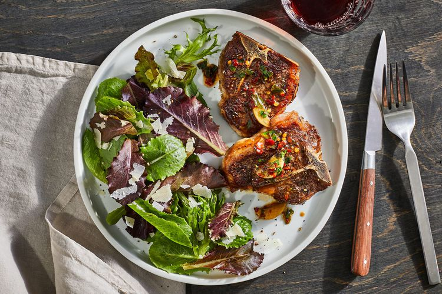

Lamb Chops Sizzled with Garlic

Source
Ingredients
8 1/2-inch-thick lamb loin chops (about 2 pounds fatty tips
trimmed)
Kosher salt and freshly ground black pepper
3 tablespoons extra-virgin olive oil
10 small garlic cloves, halved
2 tablespoons fresh lemon juice
2 tablespoons minced parsley
Steps
1. Season lamb with salt and pepper and sprinkle lightly with thyme.
2. In a very large skillet over medium-high, heat olive oil until
shimmering. Add lamb chops and garlic cook over moderately high
heat until chops are browned on the bottom, about 3 minutes.
3. Turn chops and garlic. Cook until chops are browned and garlic
is fragrant, about 2 minutes longer for medium-rare. Transfer
chops to plates, leaving garlic in skillet.
4. Add water, lemon juice, parsley, and crushed red pepper to pan
and cook, scraping up any browned bits stuck to bottom, until
sizzling, about 1 minute.